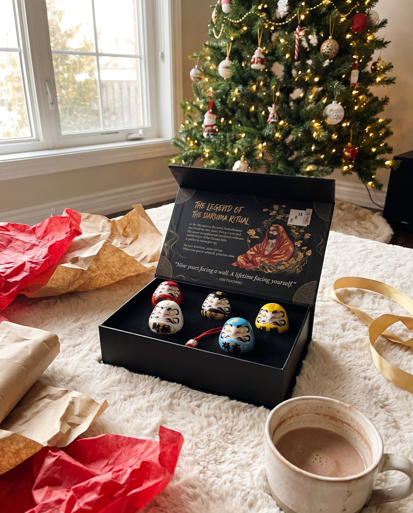
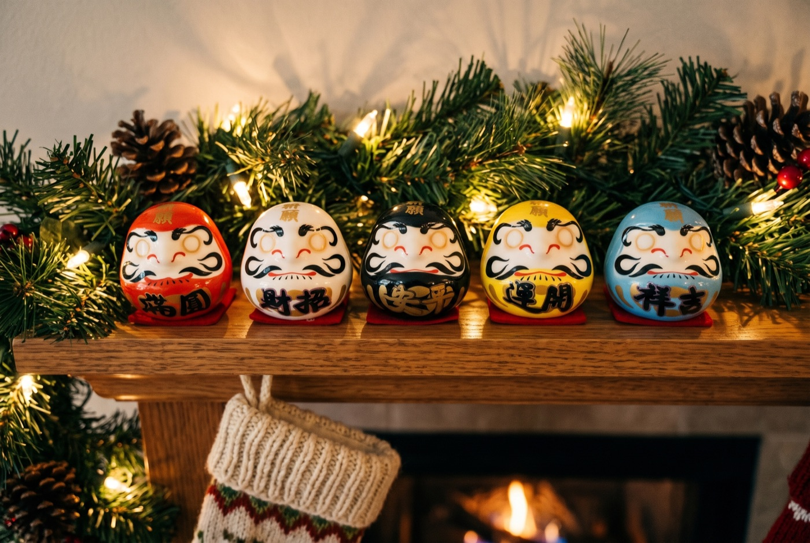
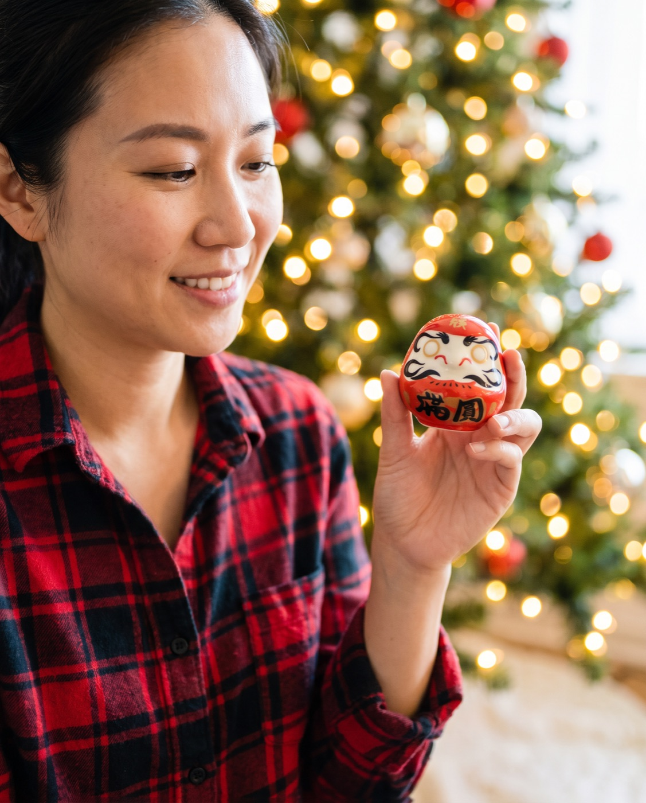
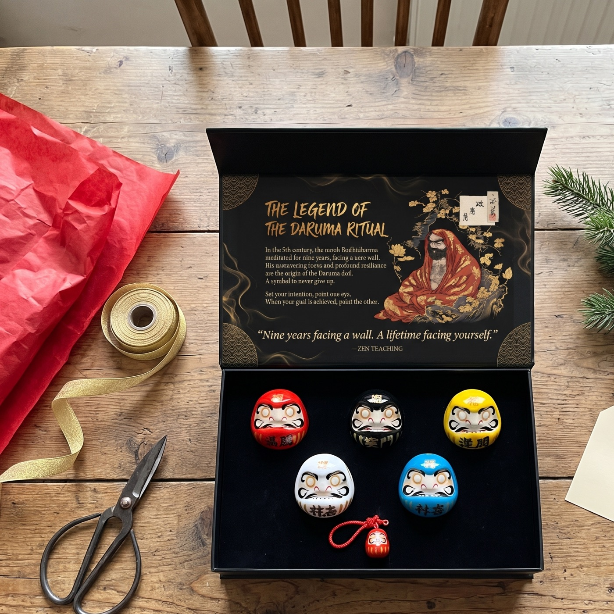
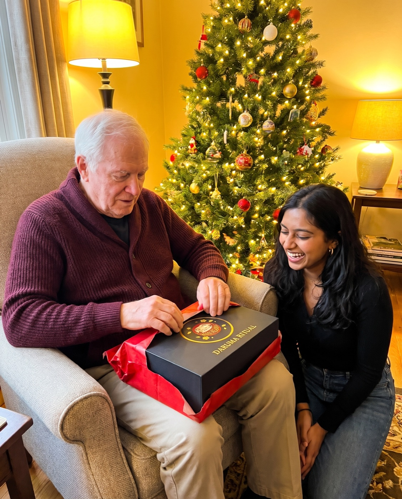

Christmas gift guide 2026
The Christmas Gift That's Still on Their Shelf in March
Most presents are forgotten by New Year's. Here's the one people keep where they can see it all year, who it suits, and which colour to choose for each person on your list.

Think back to last Christmas. How many of the presents you gave are still in use today?
For most of us, the honest answer is a few. The candle burned down. The sweater went to the back of the closet. The gadget lost its charger. It isn't that people didn't like them. They just didn't have a reason to keep them out.
That's the gap this guide is about: gifts that keep a place in someone's day long after the wrapping paper is gone.
What makes a gift last past January
We looked at the presents people actually keep and noticed three things they have in common:
- It has a job to do, not just a place on a shelf
- It means something specific to the person who receives it
- It invites them to come back to it, again and again
And the ones that fade fast usually miss all three:
- Generic gift sets that could be for anyone
- Things that get used up in a week
- Gadgets that end up in a drawer once the novelty wears off
The gift that has a job: a Daruma
A Daruma is a round Japanese doll that arrives with no eyes. That's not a flaw. It's the point.
The person who receives it chooses one goal, then paints in one eye. The doll sits on their desk or shelf, watching with that one eye, until the goal is done. Then they paint the second.
The tradition is more than 400 years old. In Japan, Daruma are bought at the New Year, when people choose what they want the year ahead to hold. Election candidates paint the second eye on the night they win.
It's a gift that starts working a week after Christmas, on New Year's Day.
Official Daruma Ritual store · Free tracked shipping worldwide · 30-day returns
One colour for every person on your list
Each set holds five ceramic Daruma, and each colour carries its own wish. That makes it easy to share them out, or to give the whole set to one person and let them choose.

Who gets which colour
Red · Fortune. The classic. For anyone at all, and especially the person who says they don't need anything.
White · Wealth. For a friend starting something new: a business, a side project, a fresh chapter.
Black · Strength. For the one who looks after everyone else and could use something for themselves.
Yellow · Safety. For someone moving house, travelling, or starting a new job.
Blue · Peace. For the person with a hectic year ahead.

What's in the box
- 5 ceramic Daruma: red, white, black, yellow and blue
- A matte-black magnetic keepsake box with a velvet tray
- The legend and ritual cards, so the person opening it knows exactly what to do
- A chiming Daruma keychain to carry the goal around
There's no marker in the box. Any black marker or brush pen works for the eyes.

How to tell a real ritual set from a souvenir
- Both eyes arrive blank. That's the whole point: you paint them.
- Each colour carries a meaning, so you can match a doll to a goal.
- It comes with the story and the ritual written down, so the person receiving it knows what to do.
- It's weighted at the base, so it rocks back up when pushed over.
Official Daruma Ritual store · Free tracked shipping worldwide · 30-day returns
How they'll use it
Here's what happens after Christmas Day, step by step:
- Day 1Choose one goal. Write it down and paint the first eye: the doll's own left, which is the one on your right as it faces you. Any black marker works (one isn't in the box).
- Every day afterThe Daruma sits where you'll see it: a desk, a shelf, a nightstand. One eye open, waiting.
- Week 4Look at it and ask yourself one honest question: what did I do this week toward the goal?
- The day it's donePaint the second eye. Keep it as a record, or start again with a new goal.
What people wrote after giving one
“I was absolutely wowed when I received the package today. Both sets arrived completely unharmed. I am going to give them as holiday gifts. Blessed and grateful.”
“I was pleased to gift my two sets, one to my therapist who has guided me over the years and another to a young woman who introduced me to the concept. Both were utterly delighted! I also love the gentle chiming of my daruma charm on my purse.”
“… I love the darumas and I would definitely buy more. I was able to gift the few as intended and keep one for myself.”
This is for you if…
- You want a gift with meaning, not more stuff
- Someone on your list keeps talking about a goal for next year
- You're buying for several people and want one gift that suits them all
Skip it if…
- You need something practical they'll use up
- You want a toy for young children
Three tips for giving it well
Give it before New Year's Day. The ritual starts on January 1, so a Christmas gift arrives right on time.
Add one line to the card. Something like "For the goal you keep talking about." It turns a nice present into a personal one.
Keep one for yourself. It's easier to start a tradition when you're doing it too. Many people paint the first eyes together on New Year's Day.
Choose your sets
Most people buy two or more: one to give, and one to share out or keep. From 2 sets, a $20 gift card comes free with the order.

 1 Premium Set
1 Premium Set5 Daruma + 1 chiming keychain
2 Premium Sets10 Daruma + 2 keychains + $20 gift card free
3 Premium Sets15 Daruma + 3 keychains + $20 gift card free
Each set: 5 ceramic Daruma, matte-black magnetic box, legend & ritual cards. Free tracked shipping.
Official Daruma Ritual store · Free tracked shipping worldwide · 30-day returns
Questions
What exactly is in a set?
Five ceramic Daruma in red, white, black, yellow and blue, a matte-black magnetic gift box with a velvet tray, the legend & ritual cards, and a chiming Daruma keychain.
Is a pen or marker included?
No. Any black marker or brush pen works for the eyes.
Do I need to know anything about Japanese culture?
No. The ritual card in the box explains the steps in a minute.
How does shipping work?
Shipping is free and tracked to every country. The delivery estimate is shown at checkout; international post is slower in December, so order early for Christmas.
What if it's not right?
You have 30 days after it arrives to request a return.
Official Daruma Ritual store · Free tracked shipping worldwide · 30-day returns